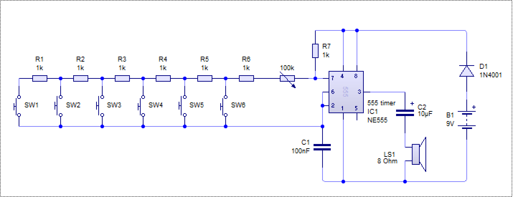
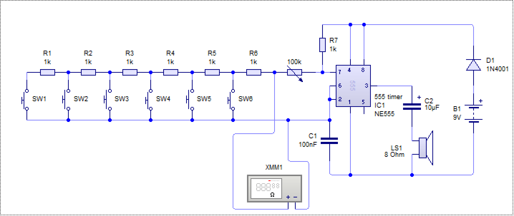

555 Piano
Design the Circuit
Design It
- Below is an image of the circuit you are going to be using.

- Use Circuit Wizard to replicate the circuit.
- The 555 Timer can be found under Integrated Circuits
- The Capacitors can be set to any capacitance you like once you have placed them.
- The potentiometer's resistance can be altered once you simulate the circuit.
Badge It - Silver
- Upload an image of the circuit to BourneToCode.com
Test It
- In Circuit Wizard, find the Virtual Instruments and then select a Digital Multimeter
- Add it into your circuit as shown below.

- Right click on the multimeter and make sure that it is measuring ohms.
- Now hit the play button to simulate your circuit and watch what happens to the resistance when different switches are pushed.
Badge It - Gold/Platinum
- Open a Word or Powerpoint document and insert, using screenshots, a set of images that demonstrates what is happening at each switch
- Add a description of what happens when different switches are pressed to your write-up.
- Upload your work to BourneToCode.com.
- The quality of your description will determine whether it is gold or platinum standard.
- Remember before uploading
green pen matters!